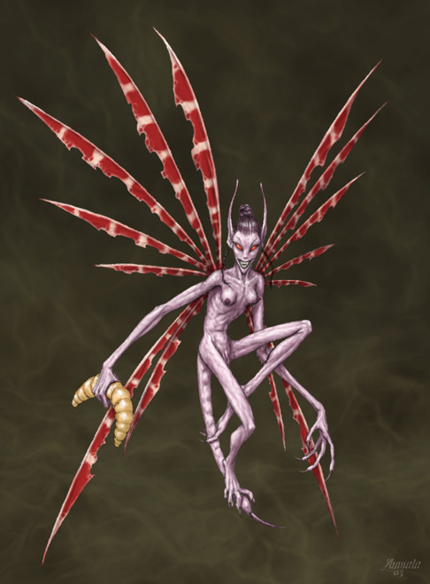

Spiritello del Male
Gli Spiritelli del Male sono creature notturne dei boschi che adorano la dea Kalian ed hanno buoni rapporti con gli elfi scuri, mentre odiano gli elfi e le creature buone della foresta. Hanno le pelle ruvida e violastra e piccoli occhi rossi. Le loro ali sono sottili e molto numerose. Infine sono dotati di una coda che può raggiungere anche i 30 centimetri.

Limiti
di classe per la razza:
Fighter
7° livello
Cleric (Kalian) 9° livello
Wizard 8° livello
Thief
12° livello
Possibilità di multi-classe:
Mage/Thief
Allineamenti consentiti:
Qualsiasi malvagio
Categorie di età :
Base Age 20 + 5d6
Childhood
1 - 24 years
Adolescence
25 - 49 years
Adulthood
50 -
99 years
Middle Age*
100 - 132 years
Old Age**
133 - 199 years
Venerable Age***
200 + years
Maximum
Age
200 + 2d100 years
Dimensioni e peso :
Si considerano creature Small, quindi la loro iniziativa di movimento è pari a +3 (+2 iniziativa di mezzo movimento).
L’altezza è pari a
60 (57 per le femmine) + 3d10 cm. E il loro peso è uguale a 22 (18 per le
femmine) + 2d3 kg.
Punteggi di Abilità :
Bonus: +
2 destrezza
Malus: – 1 forza, – 1 costituzione
Inoltre i limiti minimi e massimi sono i seguenti :
|
Abilità |
Punteggio Minimo
Razziale |
Punteggio Massimo
Razziale |
|
Forza |
3 |
13 |
|
Intelligenza |
6 |
18 |
|
Saggezza |
7 |
16 |
|
Costituzione |
5 |
16 |
|
Carisma |
8 |
18 |
|
Destrezza |
8 |
19 |
Folletti
thieving ability adjustments :
Ability Modifier
Pick Pocket +5%
Open Lock -10%
Find/Rem.
Trap
none
Move Silently +5%
Hide in Shadows +10%
Detect Noise +5%
Climb Wall none
Read Languages none
Caratteristiche speciali :
Armi
piccole: Non possono usare armi
di dimensioni large di creature medium.
Capacità evasive: Hanno una Classe Armatura naturale pari a 5. Ciò è dovuto ad uno speciale bonus dovuto alle dimensioni ed alla agilità di movimento del folletto ai quali possono aggiungersi tutti gli altri bonus (anche quelli dovuti alla destrezza). Essendo un bonus dovuto all'agilità tutti i tiri su classe armatura superiore si considerano sempre come mancati. Il folletto, però, perde interamente questo bonus in tutte le situazioni in cui non sarebbe applicabile il bonus di destrezza, inoltre nonostante abbia tale bonus non si considererà indossare armature per gli effetti dei colpi critici e per altri eventuali effetti.
Resistenza al magico: Hanno una Resistenza alla Magia innata pari al 20 % + 1 % per livello di esperienza (è naturale quindi può con il solo pensiero, non conta azione ma va dichiarata nelle iniziative, annullarla completamente per l’intero round in questione. Normalmente la resistenza è, invece, attiva e quindi non può essere annullata qualora il folletto non è in grado di pensare correttamente, come se è in coma, dorme, ecc…).
Volo del folletto: Lo Spiritello si muove camminando a un fattore movimento pari a 9, e vola ad fattore movimento 12 (manovrabilità B). Quando usa armi da tiro o da lancio volando subisce una penalità di –4 al tiro per colpire. Lo Spiritello non può prendere il volo se ingombrato.
Infravisione: Lo Spiritello ha una infravisione migliorata di 21 metri. Ma quando si trova alla luce del sole (o quella di un continual light, o altra fonte in grado di illuminare in un raggio di 12 metri) riceve -1 ai tiri per colpire.
Poteri magici innati: Ogni giorno gli spiritelli del male possono utilizzare 3 punti magici + 1 per livello di esperienza per utilizzare poteri magici lanciandoli come se fossero incantesimi. I punti magici sono recuperati interamente dal folletto nel momento di flusso di energia divina di Kalian.
Fiamma
Fatua / 1 Punto magico (Necromancy)
Range:
10 metri
Components: V, S
Duration:
Istantanea
Casting Time: 3
Area of Effect: One creature Saving Throw: Negates
Il folletto materializza fra le sue mani una fiamma dal colore azzurro e viola
che scaglia contro un suo avversario. La fiamma non brucia essendo fredda e di
energia negativa ma prosciuga l'energia vitale di chi è colpito provocando 2d4
danni da energia negativa a meno che lo stesso non schivi la fiammata superando
un tiro salvezza contro paralisi.
Buio
dello Spiritello / 2 Punti magici (Necromancy)
Range:
15 metri
Components: V, S
Duration:
1 turno
Casting Time:
4
Area of Effect: 10 metri di raggio Saving Throw: None
Il folletto crea un area di buio innaturale in una sfera di 10 metri di raggio. L'infravisione al suo interno non funziona e anche le luci normali o magiche non hanno effetto. Solo una magia di light o continual light (o altra magia considerata loro equivalente) possono annullare questo buio (in tal caso entrambi gli effetti magici svaniranno). Si noti che anche il folletto non vede all'interno di queste tenebre.
Tocco
Malvagio / 2 Punti magici (Necromancy)
Range:
Tocco
Components: V, S
Duration: 3 rounds Casting Time: 1 round
Area of Effect: La mano del folletto Saving Throw: Negates
Quando il folletto lancia questa magia, al termine del round, la sua mano viene circondata da un alone di energia oscura fluttuante e ben visibile se illuminata. Nei tre rounds immediatamente successivi al lancio della magia il folletto potrà toccare una creatura per danneggiarla. Se chi viene colpito non supera un tiro salvezza contro raggio della morte, costui perderà 1d6 punti ferita (risucchiati dall'incantesimo) oltre a subire -1 a tutti i suoi tiri per la stanchezza accumulata (creature immuni alla stanchezza subiranno solo i danni). Solo dopo che si saranno riposate per almeno 8 ore tale penalità sarà recuperata. La magia resterà sulla mano del folletto fino a che non avrà colpito un avversario o siano trascorsi interamente i 3 rounds. Creature del piano negativo, costruiti, demoni ed esseri simili sono immuni a tale magia.
Fredda
Fiamma Avvolgente / 5 Punti magici (Necromancy)
Range:
Tocco
Components: V, S
Duration: 3 rounds Casting Time: 1 round
Area of Effect: La mano del folletto Saving Throw: Negates
Quando lancia questa magia
il folletto viene avvolto da una fiamma bluastra che non emana calore e non lo
brucia. La fiamma illumina a 1 metro di distanza ed è ben visibile
notandosi anche da una certa distanza. Tutte le creature intelligenti (da
animal) la cui esistenza si basa sull’energia positiva si rendono conto che
entrare a contatto con quella fiamma può essere pericoloso.
Appena una creatura attacca il folletto in corpo a corpo e lo tocca la fiamma si
scaglia contro costui e brucia la sua energia vitale positiva provocandogli 10 danni
da energia negativa. Il folletto non può in nessun modo volontariamente
attaccare una creatura per farlo bruciare. La fiamma non ha effetto sulle
creature non viventi nel primo piano materiale positivo (come golems ,
elementali), mentre cura quelle la cui essenza si basa sul piano negativo.
Gli
Spiritelli devono raggiungere un ammontare di punti esperienza pari al 167%
di quelli che dovrebbero normalmente raggiungere per la classe scelta.